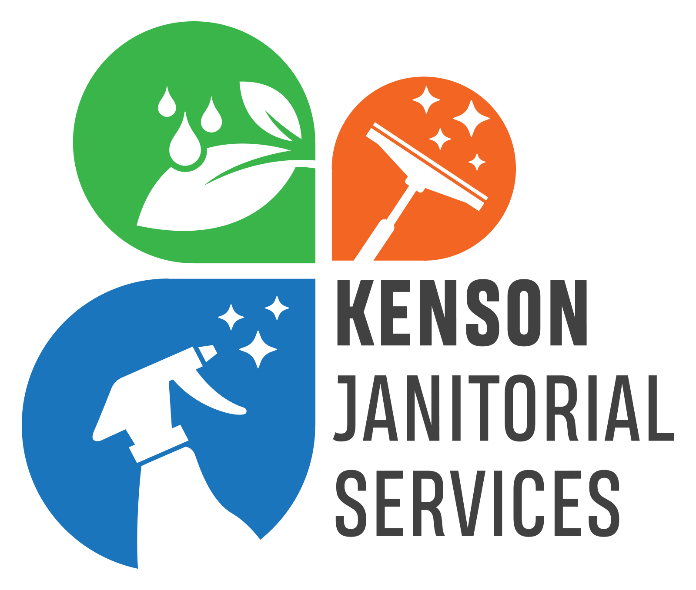
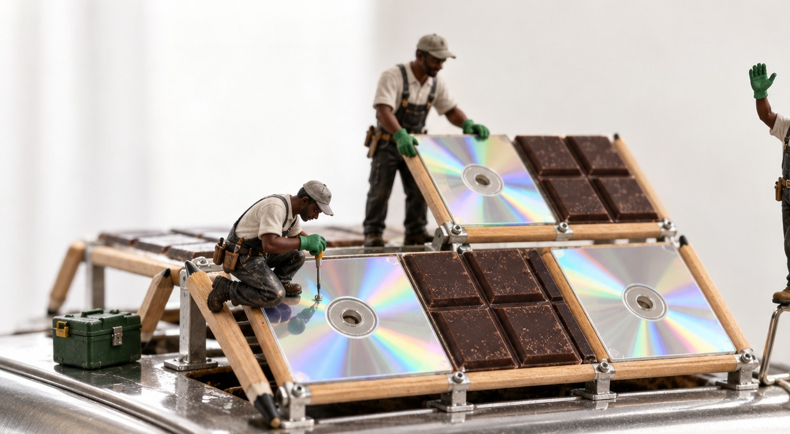

Listen & map
Learn how materials move, what local partners need and what buyers can accept.
Paynesville, Liberia
In developmentDeveloping a recycling and energy-literacy project with Kenson Janitorial Services, grounded in local knowledge and practical learning.

The starting point
We are exploring how source separation, material recovery and energy education can connect in Paynesville. The first step is to understand local collection routes, buyer requirements and the conditions for safe practice.
The project is in development. Green Rangers has not launched collection operations, a processing facility or energy production in Liberia.
Local partner
Kenson Janitorial Services is a janitorial company based in Paynesville. The project is being built together: local knowledge and hands-on practice from Kenson's side, learning materials and buyer research from Green Rangers.

The approach
Learn how materials move, what local partners need and what buyers can accept.
Develop accessible lessons about sorting, materials and energy, with safe examples and local feedback.
Use verified requirements, permissions and costs to shape the smallest useful next step.

Energy literacy
Materials, energy and daily life are connected. The learning plan starts with plain language, familiar examples and an understanding of safe boundaries.
Our aim is to learn with local partners, then use what works to guide the project forward.
For future conversations about education, materials and local partnerships.
Contact